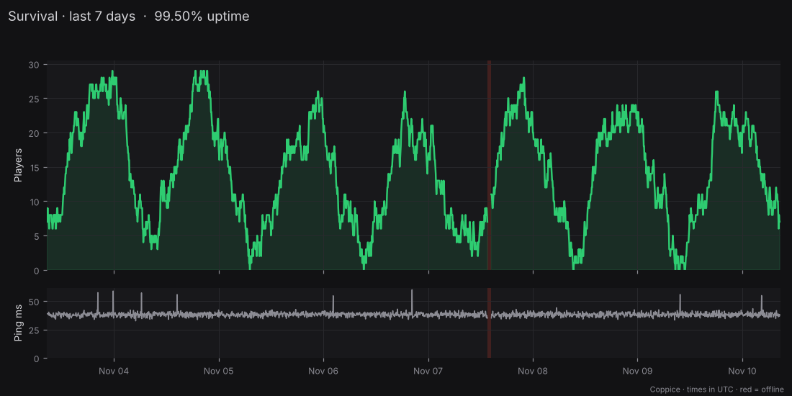

Know your Minecraft server is down before your players tell you.
Coppice is a Discord bot that checks your server every minute. If the server fails to answer twice in a row, it posts one alert and pings the role you pick. Between outages, a status card in your channel shows players, version and ping.
Free for up to 3 servers. Java and Bedrock. Set up with one command, inside Discord.
What happens when your server goes down
One missed check can be a blip, so Coppice checks again before it says anything. Here is the example outage, check by check.
- 9:50:00 PMCheck. The server answers.The card shows 14 players and 38 ms.
- 9:51:00 PMCheck. No answer.Nothing is posted yet. One miss on its own never alerts.
- 9:51:20 PMSecond check, 20 seconds later. Still no answer.That's two in a row. The alert goes to your alert channel, your role is pinged if you picked one, and the card turns to Offline.
- 9:52 to 10:38 PMChecked every minute while it's down.One alert is enough. The card keeps count of how long it's been down.
- 10:39:00 PMThe server answers again.You get a back-online message with how long it was down, and the card turns green.
These times show how the checks are spaced. How fast an alert reaches you also depends on your server's network and on Discord.
Set up in one command
Everything happens in Discord. There's no dashboard and no account to make.
Add Coppice to your Discord
Pick your Discord on Discord's add page. You need the Manage Server permission.
Run setup in the channel you want the card in
Use your server's address. Coppice works out whether it's Java or Bedrock.
/coppice setup play.yourserver.netThe card appears
Alerts go to the same channel unless you pick another.
/coppice settingslists every setting and the command that changes it.
Permissions it asks for
View Channels, Send Messages, Embed Links, Attach Files and Read Message History: enough to post and update its own messages. It doesn't have Discord's Message Content permission or admin rights. What it stores.
Graphs, quiet hours and the rest
All optional. The card and the alerts work without any of it.

/coppice graph, drawn by Coppice's own code from a week of example data. Outages are shaded.- Graphs
- Players, ping and uptime for the last 24 hours or 7 days, with peak and average players and an outage count.
- Quiet hours
- Alerts wait overnight in your time zone and arrive as one summary when the window ends. The card keeps updating.
- Patch notes
- Each new Minecraft Java release, posted to a channel you pick.
- Nicknames
- Call it Survival instead of play.example.net, on the card, alerts and lists.
- When the alert channel is gone
- If someone deletes or locks it, alerts post next to the card instead, and
/coppice settingssays what to fix. - Moving from a bot that shut down?
/monitor,/statusand/unmonitorwork here too, with the same option names.
The same checks and alerts on both plans
$0 for up to 3 servers
$3.99 a month per Discord for Premium. Sold through Discord, starting after launch.
| Feature | Free | Premium |
|---|---|---|
| Servers | 3 | 25 |
| Checks and alerts | Every 60 s | Every 60 s |
| Graphs | 24 hours, 7 days | Up to 90 days |
| Quiet hours | Yes | Yes |
| Patch notes | 1 channel | 5 channels, plus snapshots |
| Your own alert wording | No | Yes |
Premium adds room and history. If it lapses, nothing is deleted: servers over the free limit pause until it's back. Refer another community, and once they've used Coppice for 14 days you both get 30 days of Premium.
Before you add it
- Can it be wrong?
- Yes. If the network between Coppice and your server has trouble, or Discord is down, an alert can be late, missed or false. The second check is there to stop one-off false alarms. Don't rely on it alone for anything critical.
- What does it see?
- What any player sees on the multiplayer screen: online or not, player count, version, message of the day and ping. Player names only if your server shares them.
- Where do I get help?
- Ask in the Coppice Support server on Discord, run
/coppice help, or email support@coppicebot.com.